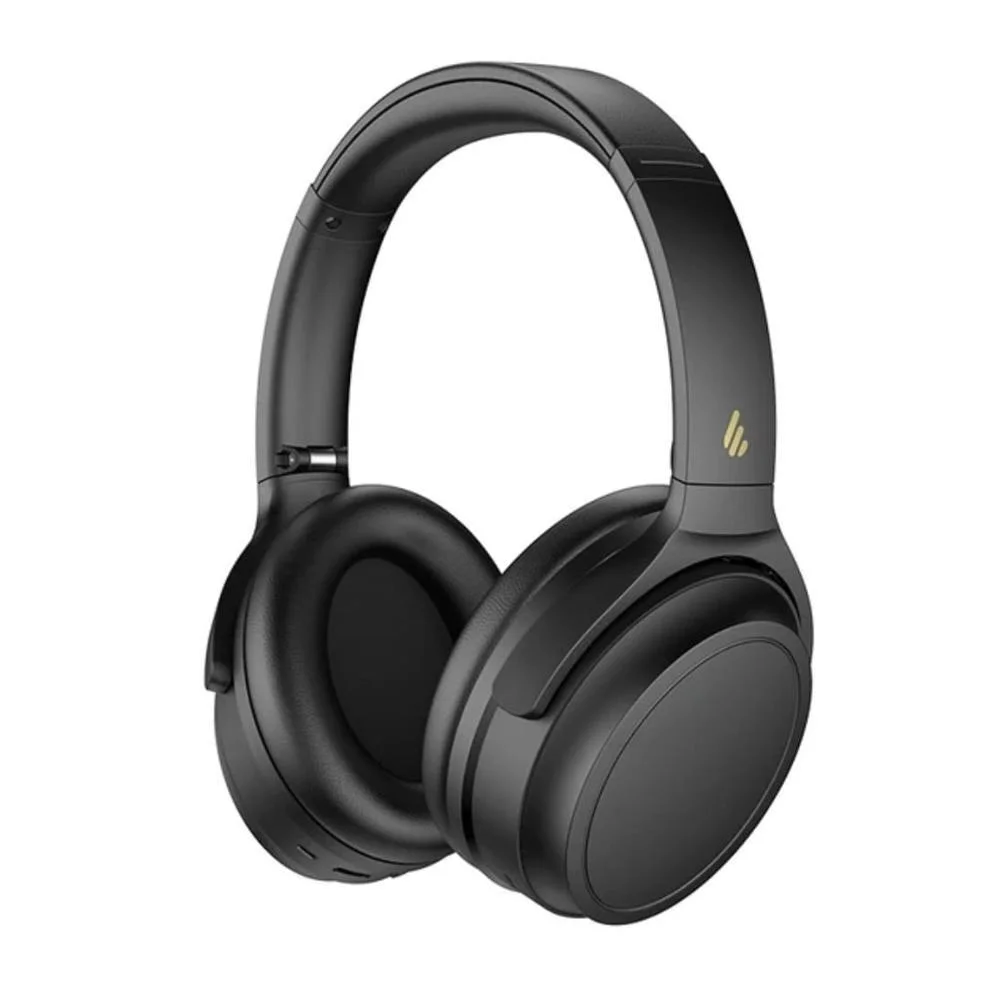

Edifier WH700NB!

Edifier WH700NB:
Fone de ouvido Bluetooth com cancelamento ativo de ruído e bateria duradoura, confortável e dobrável — ideal pra quem quer som imersivo, autonomia alta e fácil transporte no dia a dia.
R$: 359,99
Vídeo de Apresentação:
Visão Geral
O Edifier WH700NB é um headphone Bluetooth com cancelamento ativo de ruído, confortável e versátil, ideal para quem quer foco nos estudos, músicas e chamadas sem distrações. Ele entrega som equilibrado, bateria de longa duração e conforto para uso prolongado — tudo com praticidade sem fio e bom custo-benefício.
Especificações Técnicas:
- Drivers: 40mm dinâmicos
- Resposta de Frequência: 20Hz – 20kHz
- Cancelamento de Ruído: Ativo (ANC)
- Conectividade: Bluetooth 5.3
- Alcance: Até 10 metros
- Bateria: Até 68 horas (sem ANC) / ~45 horas (com ANC)
- Tempo de Carga: Aproximadamente 2 horas
- Peso: ~271g
- Compatibilidade: Android, iOS, Windows, macOS
- Recursos Extras: Modo Ambiente, carregamento USB-C
- Cores: Preto, Branco, Azul
Outros dos nossos produtos:

Teclados
Teclados mecânicos, RGB, e muito mais!

Mouses
Mouses ergonômicos, com alta precisão e design moderno.

Fones de Ouvido
Fones de ouvido com cancelamento de ruído e som de alta qualidade.